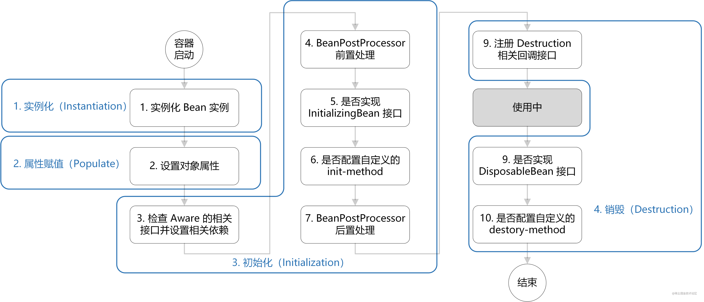
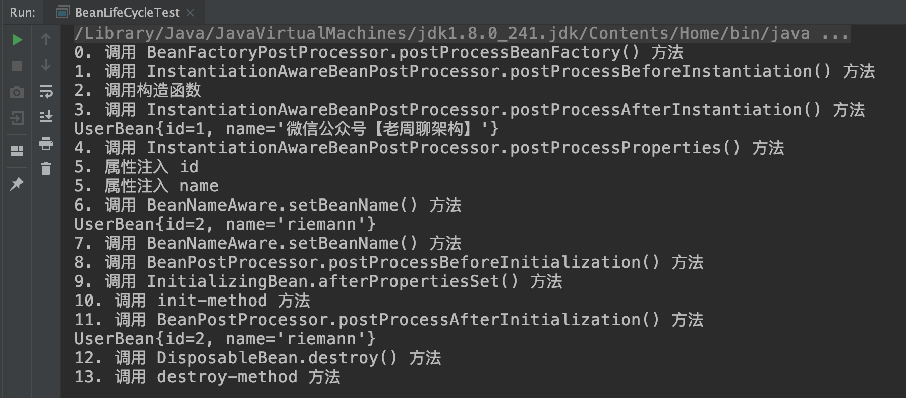

SpringIOC源码详解
IOC介绍
IoC（Inverse of Control:控制反转）是一种设计思想，就是 将原本在程序中手动创建对象的控制权，交由Spring框架来管理。IoC 容器是 Spring 用来实现 IoC 的载体， IoC 容器实际上就是个Map（key，value）,Map 中存放的是各种对象。
将对象之间的相互依赖关系交给 IoC 容器来管理，并由 IoC 容器完成对象的注入。这样可以很大程度上简化应用的开发，把应用从复杂的依赖关系中解放出来。 IoC 容器就像是一个工厂一样，当我们需要创建一个对象的时候，只需要配置好配置文件/注解即可，完全不用考虑对象是如何被创建出来的。
加载BeanDefinition
我对BeanDefinition的理解：首先Bean未实例化前在容器中的形式是BeanDefinition，BeanDefinition实例中包括了对象的所有信息，当被注入类向容器请求依赖对象时候，BeanFactory就会通过对应BeanDefinition中的信息返回一个实例。可以把BeanFactory看成是图书馆，BeanDefinitionRegistry就是图书馆里边的书架，书就在书架上存放着，这里也就要求我们的图书馆只能有一个书架。每个BeanDefinition都要被放在BeanDefinitionRegistry中才能被容器管理。至于BeanDefinition，一般是通过BeanDefinitionReader读取配置文件或者注解并映射成对应的BeanDefinition来生成的。
IOC 的精髓是 AbstractApplicationContext 的 refresh() 方法。我们在springboot启动类中调用 SpringApplication.run 方法，run 方法中调用 refreshContext 方法，就会进入到 AbstractApplicationContext 的 refresh() 方法。之前我们讲过BeanFactory是较为轻量的容器，这个容器启动时会通过BeanDefinitionReader来加载配置文件获得对应BeanDefinition，然后将BeanDefinition注册到BeanDefinitionRegistry。
Spring IOC容器的启动流程：
spring IOC 容器管理Bean主要分为两个步骤
第一：加载bean的配置文件，从而在内存中生成BeanDefinition对象，并将BeanDefinition对象在BeanDefinitionRegistry中注册（其实也可以算作是SpringBean生命周期的准备阶段）
第二：根据第一步生成的BeanDefinition对象创建bean的实例（Spring Bean的生命周期详解）
具体步骤如下：
（1）初始化Spring容器，注册内置的BeanPostProcessor的BeanDefinition到容器中：
① 实例化BeanFactory【DefaultListableBeanFactory】工厂，用于生成Bean对象
② 实例化BeanDefinitionReader注解配置读取器，用于对特定注解（如@Service、@Repository）的类进行读取转化成 BeanDefinition 对象，（BeanDefinition 是 Spring 中极其重要的一个概念，它存储了 bean 对象的所有特征信息，如是否单例，是否懒加载，factoryBeanName 等）
③ 实例化ClassPathBeanDefinitionScanner路径扫描器，用于对指定的包目录进行扫描查找 bean 对象
（2）将配置类的BeanDefinition注册到容器中：
（3）调用refresh()方法刷新容器：
① prepareRefresh()刷新前的预处理：
② obtainFreshBeanFactory()：获取在容器初始化时创建的BeanFactory：
③ prepareBeanFactory(beanFactory)：BeanFactory的预处理工作，向容器中添加一些组件：
④ postProcessBeanFactory(beanFactory)：子类重写该方法，可以实现在BeanFactory创建并预处理完成以后 做进一步的设置
⑤ invokeBeanFactoryPostProcessors(beanFactory)：在BeanFactory标准初始化之后执行 BeanFactoryPostProcessor的方法，即BeanFactory的后置处理器：
⑥ registerBeanPostProcessors(beanFactory)：向容器中注册Bean的后置处理器BeanPostProcessor，它的 主要作用是干预Spring初始化bean的流程，从而完成代理、自动注入、循环依赖等功能
⑦ initMessageSource()：初始化MessageSource组件，主要用于做国际化功能，消息绑定与消息解析：
⑧ initApplicationEventMulticaster()：初始化事件派发器，在注册监听器时会用到：
⑨ onRefresh()：留给子容器、子类重写这个方法，在容器刷新的时候可以自定义逻辑
⑩ registerListeners()：注册监听器：将容器中所有的ApplicationListener注册到事件派发器中，并派发之前步 骤产生的事件：
⑪ finishBeanFactoryInitialization(beanFactory)：初始化所有剩下的单实例bean，核心方法是 preInstantiateSingletons()，会调用getBean()方法创建对象；（这里就开始Bean的实例化了，具体如下面Bean的生命周期）
⑫ finishRefresh()：发布BeanFactory容器刷新完成事件：
Spring IoC容器的源码过程
new AnnotationConfigApplicationContext实例化容器入口（ApplicationContext容器的注解常用实现类）
调用本身无参构造函数this()
会调用父类的无参构造函数创建Bean工厂，然后创建读取注解的BeanDefinitionReader
在创建BeanDefinitionReader时，会注册一些Spring内置的原始BeanDefinition：
ConfigurationClassPostProcessor： 解析我们配置类的处理器
AutowiredAnnotationBeanPostProcessor： 处理@Autowired注解的后置处理器
RequiredAnnotationBeanPostProcessor：处理@Required属性注解的后置处理器
这些Spring内置的原始Bean定义通过DefaultListableBeanFactory把这些Bean定义放入BeanDefinitionMap（一个ConcurrentHashMap，beanName作为Key，beanDefinition作为Value）中以及beanDefinitionNames（一个List，里面存放了beanName）。
再创建Bean定义扫描器（仅仅是为了设计程序时可以手动调用）
调用register(annotatedClasses);
会循环传进来的配置类数组执行doRegisterBean方法
把当前配置类封装成Bean定义
判断是否需要跳过注解，Spring中有一个@Condition注解，当不满足条件，这个bean就不会被解析
解析Bean的作用域，如果没有设置的话，默认为单例
获得BeanName
解析通用注解，填充到Bean定义中，解析的通用注解：
Lazy
Primary
DependsOn
Role
Description
把Bean定义和beanName封装并调用DefaultListableBeanFactory中的registerBeanDefinition方法去注册
此时只是实例化了一个工厂、把Spring内置的原始Bean定义，还有我们传进来的Bean定义（配置类）注册到BeanDefinitionMap、beanDefinitionNames两个变量中
调用refresh();
prepareRefresh()刷新前准备工作，主要是保存了容器的启动时间，启动标志等。
ConfigurableListableBeanFactory beanFactory = obtainFreshBeanFactory(); 拿到Bean工厂
prepareBeanFactory(beanFactory); 对bean工厂进行填充属性
设置了一个类加载器
设置了bean表达式解析器
设置了一些忽略自动装配的接口
设置了一些允许自动装配的接口，并且进行了赋值操作
注册bean工厂的内部的Bean
nvokeBeanFactoryPostProcessors(beanFactory);调用Bean工厂和调用addBeanFactoryPostProcessor添加的Bean工厂后置处理器
registerBeanPostProcessors(beanFactory); 注册和实例化Bean后置处理器
finishBeanFactoryInitialization(beanFactory); （开始Bean的实例化）
- 实例化所有剩余的（非懒加载）单例，比如invokeBeanFactoryPostProcessors方法中根据各种注解解析出来的类，在这个时候都会被初始化。
- 实例化的过程各种BeanPostProcessor开始起作用。
Spring Bean的生命周期：
对于普通的 Java 对象，当 new 的时候创建对象（java源码被编译为被编译为class文件,等到类需要被初始化时（比如说new、反射等）class文件被虚拟机通过类加载器加载到JVM），然后该对象就能够使用了。一旦该对象不再被使用，则由 Java 自动进行垃圾回收。
而 Spring 中的对象是 bean，bean 和普通的 Java 对象没啥大的区别，只不过 Spring 不再自己去 new 对象了，而是由 IoC 容器去帮助我们实例化对象并且管理它。我们需要哪个对象，去问 IoC 容器要即可。IoC 其实就是解决对象之间的耦合问题，Spring Bean 的生命周期完全由容器控制。
除了Class对象之外，还会使用BeanDefinition的实例来描述对象的信息，Spring的BeanDefinition存储着我们日常给Spring Bean定义的元数据@Scope、@Lazy、@DependsOn等等）Spring在启动的时候需要「扫描」在XML/注解/JavaConfig 中需要被Spring管理的Bean信息，随后，会将这些信息封装成BeanDefinition，最后会把这些信息放到一个beanDefinitionMap（key是beanName，value则是BeanDefinition对象）中到这里其实就是把定义的元数据加载起来，目前真实对象还没实例化。到这里其实就是把定义的元数据加载起来，目前真实对象还没实例化，这里其实是Spring容器启动时做的工作，（这里有区别BeanFactory轻量级容器懒加载等调用getBean时才实例化，而常用的ApplicationContext启动就全部将Bean实例化）下面就是Bean实例化到销毁的整个生命周期
简单来说，Spring Bean的生命周期只有四个阶段：实例化 Instantiation –> 属性赋值 Populate –> 初始化 Initialization –> 销毁 Destruction主要逻辑都在doCreate()方法中，逻辑很清晰，就是顺序调用以下三个方法：
- createBeanInstance() -> 实例化
- populateBean() -> 属性赋值
- initializeBean() -> 初始化
流程图如下所示：

1. 实例化Bean
对于BeanFactory容器，当客户向容器请求一个尚未初始化的bean时，或初始化bean的时候需要注入另一个尚未初始化的依赖时，容器就会调用createBeanInstance()进行实例化。 对于ApplicationContext容器，当容器启动结束后，便实例化所有的bean。 容器通过获取BeanDefinition对象中的信息进行实例化。并且这一步仅仅是简单的实例化，并未进行依赖注入。在这一步是通过反射来实现的，一般情况下会通过反射选择合适的构造器来把对象实例化，但这里把对象实例化，只是把对象给创建出来，而对象具体的属性是还没注入的。
2. 属性赋值：
这一步根据BeanDefinition中的信息把对象的相关属性给注入。
顺序：1、静态属性：static 开头定义的属性 2、静态方法块： static {} 圈起来的方法块 3、普通属性： 未带static定义的属性 4、普通方法块： {} 圈起来的方法块 5、构造函数： 类名相同的方法 6、方法： 普通方法
3.1 注入Aware接口
Aware类型的接口的作用就是让我们能够拿到Spring容器中的一些资源。
BeanFactory容器提供的 Aware 接口有：
- BeanNameAware：注入当前 bean 对应 beanName；
- BeanClassLoaderAware：注入加载当前 bean 的 ClassLoader；
- BeanFactoryAware：注入 当前BeanFactory容器 的引用。
而对于 ApplicationContext 类型的容器，也提供了 Aware 接口，只不过这些 Aware 接口的注入实现，是通过 BeanPostProcessor 的方式注入的，但其作用仍是注入依赖。
- EnvironmentAware：注入 Enviroment，一般用于获取配置属性；
- EmbeddedValueResolverAware：注入 EmbeddedValueResolver（Spring EL解析器），一般用于参数解析；
- ApplicationContextAware：会调用setApplicationContext(ApplicationContext)方法，注入 ApplicationContext 容器本身。
3.2 BeanPostProcessor
千万不要把这个和 BeanFactoryProcessor 混淆，他们是不同的阶段，BeanFactoryProcessor 作用于容器启动阶段将所有Bean加载到BeanDefinition 的尾部(Spring允许在Bean创建之前，读取Bean的元属性，并根据自己的需求对元属性进行改变，比如将Bean的scope从singleton改变为prototype，最典型的应用应当是PropertyPlaceholderConfigurer，替换xml文件中的占位符，替换为properties文件中相应的key对应的value)，BeanPostProcessor则作用域Bean的初始化阶段。
当经过上述几个步骤后，bean对象已经被正确构造，但如果你想要对象被使用前再进行一些自定义的处理，就可以通过BeanPostProcessor接口实现。 该接口提供了两个函数：
postProcessBeforeInitialzation( Object bean, String beanName ) 当前正在初始化的bean对象会被传递进来，我们就可以对这个bean作任何处理。 这个函数会先于InitialzationBean执行，因此称为前置处理。 所有Aware接口的注入就是在这一步完成的。
postProcessAfterInitialzation( Object bean, String beanName ) 当当前正在初始化的bean对象会被传递进来，我们就可以对这个bean作任何处理。 这个函数会在InitialzationBean（3.3）完成后执行，因此称为后置处理。
使用方法见（Spring上下文）
另InstantiationAwareBeanPostProcessor跟BeanPostProcessor差不多只不过是作用在实例化的前后。
3.3 InitializingBean与init-method
InitializingBean：如果Bean实现了InitializingBean接口，执行afeterPropertiesSet()方法。但它与前置处理不同，由于该函数并不会把当前bean对象传进来，因此在这一步没办法处理对象本身，只能增加一些额外的逻辑。
若要使用它，我们需要让bean实现该接口，并把要增加的逻辑写在该函数中。然后Spring会在前置处理完成后检测当前bean是否实现了该接口，并执行afterPropertiesSet函数。
init-method：如果Bean在Spring配置文件中配置了 init-method 属性，则会自动调用其配置的初始化方法。Spring为了降低对客户代码的侵入性，给bean的配置提供了init-method属性，该属性指定了在这一阶段需要执行的函数名。Spring便会在初始化阶段执行我们设置的函数。init-method本质上仍然使用了InitializingBean接口。
实现方式：1. @PostConstruct、2. 实现InitializingBean接口、3. 定义init-method方法
4 DisposableBean和destroy-method
和init-method一样，通过给destroy-method指定函数，就可以在bean销毁前执行指定的逻辑。
代码举例:（创建UserBean）
1 UserBean 类
1 |
|
2 InstantiationAwareBeanPostProcessor 接口实现类
1 |
|
3 BeanPostProcessor 接口实现类
1 |
|
4 BeanFactoryPostProcessor 接口实现类
1 |
|
5 applicationContext.xml
1 |
|
6 测试类
1 | public class BeanLifeCycleTest { |
7 控制台结果打印

Spring 循环依赖问题
循环依赖问题在Spring中主要有三种情况：
（1）通过构造方法进行依赖注入时产生的循环依赖问题。
（2）通过setter方法进行依赖注入且是在多例（原型）模式下产生的循环依赖问题。
（3）通过setter方法进行依赖注入且是在单例模式下产生的循环依赖问题。
在Spring中，只有第（3）种方式的循环依赖问题被解决了，其他两种方式在遇到循环依赖问题时都会产生异常。这是因为：
第一种构造方法注入的情况下，在new对象的时候就会堵塞住了，其实也就是”先有鸡还是先有蛋“的历史难题。
第二种setter方法（多例）的情况下，每一次getBean()时，都会产生一个新的Bean，如此反复下去就会有无穷无尽的Bean产生了，最终就会导致OOM问题的出现。
Spring在单例模式下的setter方法依赖注入引起的循环依赖问题，主要是通过二级缓存和三级缓存来解决的，其中三级缓存是主要功臣。解决的核心原理就是：在对象实例化之后，依赖注入之前，Spring提前暴露的Bean实例的引用在第三级缓存中进行存储。
解决办法：三级缓存解决
所谓的三级缓存其实就是三个Map
- singletonObjects 一级缓存（一级，日常实际获取成品Bean的地方）
- earlySingletonObjects 二级缓存（二级，还没进行属性注入的半成品Bean，由三级缓存放进来t）
- singletonFactories 三级缓存（放ObjectFactory是一个对象工厂，函数接口实现回调函数）
- 一级缓存中取A对象，如果为空并且不是正在创建状态就加锁成功后再次尝试从一级缓存中获取（此处是为了防止其他线程已经创建完成之后另一个线程获取锁，这个时候判断之前创建有的话这里就不用再创建了），如果还是没有则进行创建；
- 标记A对象正在创建（放入set中），把A对象完成实例化，此时没有完成初始化；
- 往三级缓存中放入一个函数接口（用于其他对象依赖A对象时动态代理生成A对象并注入），此时三级缓存中有A对象；
- 对A对象进行属性赋值，发现要注入B对象，然后去获取B对象
- 从一级缓存中取B对象，如果为空并且不是正在创建状态就加锁再次尝试从一级缓存中获取（由于此时获取锁为同一线程可重入），如果还是没有则进行创建；
- 标记B对象正在创建（放入set中），把A对象完成实例化，此时没有完成初始化；
- 往三级缓存中放入一个函数接口（用于其他对象依赖A对象时动态代理生成B对象并注入），此时三级缓存中有A、B对象；
- 对B对象进行属性赋值，发现要注入A对象，然后去获取A对象；
- 此时一级缓存没有，但是A对象正在创建，然后加锁（此时加锁是为了防止其他线程获取半成品对象）从二级缓存中取，没有就从三级缓存中取回调函数调用动态代理生成对象，取到后放入二级缓存中并从三级缓存中去除，此时二级缓存中有A对象，三级缓存中有B对象；
- 然后把A对象注入到B对象，B对象初始化完成，撤销B对象的正在缓存标记，加锁把B放入一级缓存从二三级缓存中去除，此时二级缓存中有A对象，三级缓存中没有对象；
- 此时能取到B对象，然后把B对象注入A对象中，A初始化完成，把A放入一级缓存从二三级缓存移除；
- 完成A对象、B对象创建；
多线程环境下加锁原因
防止多线程情况下，一个线程在实例化Bean后，未初始化前，其他线程拿到不完整的Bean。
二级缓存的意义
如果只有一级缓存，那么完整Bean和不完整Bean都放在一级缓存中，并发情况下，有可能取到半成品（未属性赋值、初始化），属性都是null。
二级缓存只要是为了分离完整Bean和不完整Bean（未属性赋值、初始化）的存放， 防止多线程中在Bean还未创建完成时读取到的Bean时不完整的。所以也是为了保证我们getBean是完整最终的Bean，不会出现不完整的情况。
三级缓存的意义
主要用来去生成原始对象进行了 AOP之后得到的代理对象，方法职责单一、方便后期维护。
构造函数循环依赖问题
- Spring没有解决构造函数的循环依赖
- 解决循环依赖主要是三级缓存的实现（三个Map），在Bean调用构造器实例化之前，三级缓存（三个Map）并没有Bean的任何相关信息，在实例化之后才放入三级缓存中，因此当getBean的时候缓存并没有命中，这样就抛出了循环依赖的异常了。
多例Bean循环依赖问题
- 单例Bean：我们是从一级缓存中获取Bean，只需要创建一次对象，后面就可以从缓存中取出来；
- 多例Bean：每次都要去创建对象，无法利用缓存，就无法解决循环依赖问题；
BeanFactory和FactoryBean的区别
BeanFactory
BeanFactory是个Factory，也就是IOC容器或对象工厂， BeanFactory定义了IOC容器的最基本形式，并提供了IOC容器应遵守的的最基本的接口，也就是Spring IOC所遵守的最底层和最基本的编程规范。在Spring代码中，BeanFactory只是个接口，并不是IOC容器的具体实现，但是Spring容器给出了很多种实现，如 DefaultListableBeanFactory、XmlBeanFactory、ApplicationContext等，都是附加了某种功能的实现。
BeanFactory和ApplicationContext是Spring中的两种容器。
BeanFactory默认采用延迟初始化策略，所以相对来说，容器启动较快，所需资源不多。
ApplicationContext间接继承自BeanFactory，增加国际化等高级功能，其管理的对象在容器启动后默认全部初始化完成，所以启动所需要资源较多，所需时间长。
1 | public interface BeanFactory { |
BeanFactory使用场景
- 从Ioc容器中获取Bean(byName or byType)
- 检索Ioc容器中是否包含指定的Bean
- 判断Bean是否为单例
实际上，BeanFactory只负责定义如何访问查看容器内Bean的状态，那么Bean从哪里来的呢？这些比较复杂的问题就交给底下人去办好啦，DefaultListableBeanFactory是BeanFactory的一个间接子类，它实现了BeanFactory的一个子接口。同时，他还实现了BeanDefinitionRegistry，这个接口定义了Bean的注册逻辑。
这里首先要知道Bean在容器中的形式是BeanDefinition，BeanDefinition实例中包括了对象的所有信息，当被注入类向容器请求依赖对象时候，BeanFactory就会通过对应BeanDefinition中的信息返回一个实例。
可以把BeanFactory看成是图书馆，BeanDefinitionRegistry就是图书馆里边的书架，书就在书架上存放着，这里也就要求我们的图书馆只能有一个书架。每个BeanDefinition都要被放在BeanDefinitionRegistry中才能被容器管理。
至于BeanDefinition，一般是通过BeanDefinitionReader读取配置文件并映射成对应的BeanDefinition来生成的。
一般情况下，Spring通过反射机制利用
FactoryBean
BeanFactory和FactoryBean都可以用来创建对象，只不过创建的流程和方式不同，当使用BeanFactory的时候，必须要严格的遵守bean的生命周期，经过一系列繁杂的步骤之后可以创建出单例对象，是流水线式的创建过程，而FactoryBean是用户可以自定义bean对象的创建流程，不需要按照bean的生命周期来创建，它生成的以及提供给容器管理的正是它的getObject()方法所返回的bean，在此接口中包含了三个方法：
isSingleton:判断是否是单例对象
getObjectType:获取对象的类型
getObject:在此方法中可以自己创建对象，使用new的方式或者使用代理的方式都可以，用户可以按照自己的需要随意去创建对象，在很多框架继承的时候都会实现FactoryBean接口，比如Feign
FactoryBean使用场景
FactoryBean在Spring中最为典型的一个应用就是用来创建AOP的代理对象。
我们知道AOP实际上是Spring在运行时创建了一个代理对象，也就是说这个对象，是我们在运行时创建的，而不是一开始就定义好的，这很符合工厂方法模式。更形象地说，AOP代理对象通过Java的反射机制，在运行时创建了一个代理对象，在代理对象的目标方法中根据业务要求织入了相应的方法。这个对象在Spring中就是——ProxyFactoryBean。
所以，FactoryBean为我们实例化Bean提供了一个更为灵活的方式，我们可以通过FactoryBean创建出更为复杂的Bean实例。、
举例：
1 | public class User implements FactoryBean { |
上边这个User实现FactoryBean，可以用来生产名字为 FactoryBeanValue的user，接着把这个工厂Bean交给Spring管理。假设我们接着向容器中注册另一个user：
1 |
|
1 |
|
最后可以看到，容器提供的user的名字其实还是FactoryBeanValue，即我们的工厂bean中提供的，因为我们从工厂方法中获得的bean一定是从getObject()这个方法中获得的
BeanFactory是容器，而FactoryBean则是工厂Bean，帮助我们定制实例化Bean，其实这何尝不是代理模式的一个应用，我们可以在getObject()那里再加一些别的逻辑，相当于搞了一层代理~
参考：https://blog.csdn.net/weixin_43738764/article/details/124966670
https://blog.csdn.net/xujingyiss/article/details/119683335
ApplicationContext
ApplicationContext代表IOC容器，在SpringIOC容器中读取Bean配置创建Bean实例之前，必须对它进行实例化，只有在容器实例化后才可以从IOC容器里获取Bean实例并使用。
Spring IOC容器实现方式
Spring 提供了两种类型的IOC容器实现：
BeanFactory：IOC容器的基本实现。
ApplicationContext：提供了更多的高级特性，是BeanFactory的子接口。
ApplicationContext主要实现类：
ClassPathXmlApplicationContext：可以加载类路径下的配置文件，要求配置文件必须在类路径之下。
FileSystemXmlApplicationContext：可以加载磁盘中任意路径下的配置文件，要求具有访问权限。
AnnotationConfigApplicationContext：该类继承自 GenericApplicationContext ，提供了注解配置（例如：@Configuration、@Component等）和类路径扫描（scan方法）的支持。，用于读取注解创建容器。
getBeansOfType。可通过接口获取其实现类（前提是这些实现类由spring容器管理）
采用ApplocationContext和getBeansOfType可以根据不同的业务类型切换接口的实现列，使用getBeansOfType取出所有的接口实现类存入Map中，使用的时候根据业务名字来取出实现示例就可以。